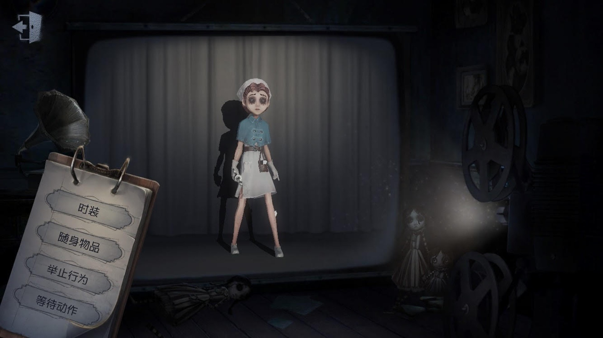

醫生

【人物介紹】
名字：艾米麗‧黛兒
她有野心，極其聰明看起來又不失真誠，但在那雙眼睛後面還藏著更多東西，要在這個瘋狂的世界裡存活，有時候就得做些驚人之舉。 已經對不停地搬遷感到疲倦，艾米麗希望能借此找到一個可以被稱為"家”的地方，並且最終得到她從未擁有的安全感和穩定生活。在此之前，她得解決過去遺留的一些"問題"。
【能力介紹】
醫藥專精：隨身攜帶治療工具，可在受傷狀態下治療自己。
醫術高超：具有高超的醫術，治療他人的速度提升60%，自療速度提升20%；耳濡目染下，所有人的治療速度均提升5%。
上等人：醫生出身優渥，身嬌體貴，其板窗交互速度均降低15%。
莊園老友：參與過遊戲的老手，比新人更警覺，每次受擊後獲得的加速時間延長2秒。
醫生是初始角色之一，初始道具為針筒，可以治療自己，針筒用得好的話醫生是個讓監管者很頭痛的角色，但缺點是醫生板窗交互速度較慢，容易被監管者擊中。